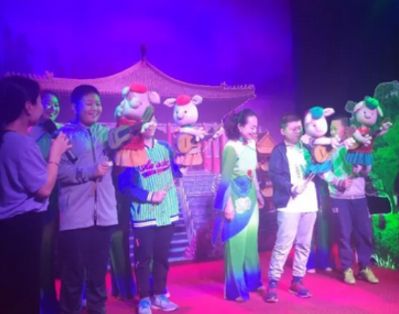

回到资讯领略孝义非遗精粹 感受皮影木偶文化
5月6日上午， 孝义市崇文街小学268班走进孝义皮影木偶剧团，来感受她台前幕后之魅力，并唤起我们保护和传承非物质遗产意识。
孝义皮影木偶制作精美、操作传神逼真，表演手段独特，素有“三晋奇葩”之美称。王茂伟老师精彩的讲解、提问、互动、亲身体验，使同学们对木偶产生了浓厚的兴趣。
老师、学生、家委会家长一同观看皮影戏、木偶表演等多个剧目。在享受传统文化艺术表演的同时，了解了中华民族的传统艺术知识，感受到了孝义大地灿烂的文化及悠久的历史。学生们和演员进行了台上互动，快乐体验。老师、家长台上、台下齐上阵，在别样的体验中感受到了传统艺术的魅力。
之后，在剧团演员老师的指导下参与了画脸谱的实践。不到一会儿同学们就画出了漂亮的脸谱。从听、看、到动手实践，同学们在享受互动体验的同时，更深入了解了中华民族的传统艺术知识，尤其了解了孝义的非遗精粹。此次走进孝义皮影木偶剧团活动圆满结束，老师、同学、家长们都满载而归。 [2019]之后，在剧团演员老师的指导下参与了画脸谱的实践。不到一会儿同学们就画出了漂亮的脸谱。从听、看、到动手实践，同学们在享受互动体验的同时，更深入了解了中华民族的传统艺术知识，尤其了解了孝义的非遗精粹。此次走进孝义皮影木偶剧团活动圆满结束，老师、同学、家长们都满载而归。
活动结束后，家长、学生们都纷纷表示，这样的实践活动要多开展。让学生在实践中感受浓厚的家乡文化，既拓宽了视野，丰富了知识，又培养了学生热爱家乡、热爱传统、热爱祖国的思想情感。
发展简史：
- 战国/宋金
孝义皮影起源于战国，是中国最早的皮影发源地之一。

- 明清
明清时为孝义皮影的鼎盛期，孝义境内皮影班社多达60多家，随后逐渐衰落。
-
- 1950年
1956年成立孝义市木偶皮影艺术团，"文革"时期撤消。
-
- 1978年
1978年恢复皮影戏演出，曾参加首届中国艺术节演出，赴英国交流访问演出。
-
- 1995年
1995年，孝义皮影中的武将形象作为邮票图案被全国人民认识。
-
- 至今
孝义皮影剧目丰富，现收藏有200余本，这些剧本题材广泛，内容丰富，极具学术价值。